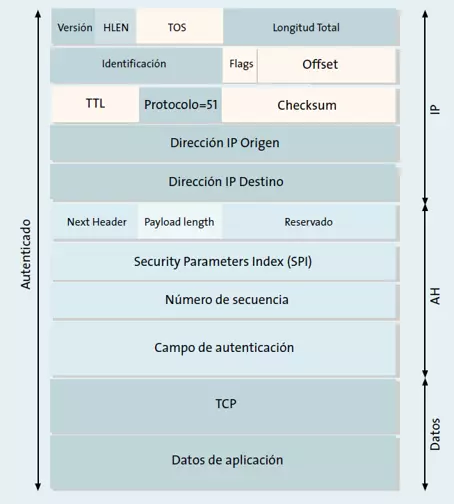
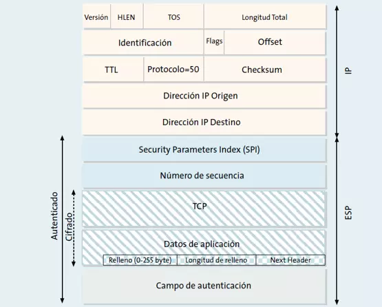

Seguridad en la comunicación de datos
Cabeceras de IPSec
El protocolo IPsec tiene una arquitectura con varias cabeceras, dependiendo de lo que nos interese «asegurar», podremos elegir una cabecera u otra, no podemos elegir ambas cabeceras simultáneamente en un mismo túnel de IPsec. Las cabeceras que tenemos en este protocolo son las siguientes:
- Cabecera de Autenticación (AH)
- Carga de Seguridad Encapsulada (ESP)
Cabecera de autenticación (AH)
Esta cabecera proporciona autenticación e integridad a los paquetes IP transmitidos, para proporcionar esta característica IPsec, hace uso de las huellas digitales HMAC. El propio protocolo se encargará de calcular una función hash al contenido del paquete IP, algunas de las funciones hash utilizadas por este protocolo son MD5 o SHA-1 que no son seguras, pero también soporta SHA256 o SHA512 que sí son seguras.
Esta cabecera proporciona al receptor de los paquetes IP un método para autenticar el origen de los datos, y verificar que dichos datos no han sido alterados en la comunicación. Un detalle muy importante, es que esta cabecera no proporciona confidencialidad porque no cifra los datos del paquete IP, por tanto, la información intercambiada puede ser vista por terceros a no ser que usen protocolos como HTTPS o FTPES con seguridad TLS.
AH es una cabecera de autenticación que se inserta entre la cabecera IP estándar (tanto en redes IPv4 como IPv6) y los datos transportados. Estos datos transportados pueden ser un mensaje TCP, UDP o ICMP, e incluso un datagrama IP completo. Dentro de la cabecera AH es donde se indica los datos de la capa superior, además, AH asegura la integridad y autenticidad de la propia cabecera IP, excepto los cambios variables como TOS, TTL, flags, offset y checksum.
El funcionamiento del protocolo AH es el siguiente:
- El emisor calcula la función hash a partir del mensaje a transmitir. Se copiará a la cabecera AH en el campo «Datos de autenticación».
- Se transmiten los datos vía Internet.
- Cuando el paquete llega al receptor, aplicará la función hash y la comparará con la que ya tenía (ambos tienen la misma clave secreta compartida).
Si las huellas digitales coinciden, significa que el datagrama no ha sido modificado, de lo contrario, podremos afirmar que han manipulado la información.
Carga de seguridad encapsulada (ESP)
La Carga de Seguridad Encapsulada, o también conocida como ESP, ofrece autenticación, integridad y confidencialidad de los datos transmitidos a través de IPsec. Es decir, en este caso sí estaremos cifrando todo el campo de datos para que todas las comunicaciones sean confidenciales, a diferencia de AH que no cifra el mensaje transmitido. Para conseguir estas características de seguridad, se hace un intercambio de llaves públicas haciendo uso de Diffie-Hellmann para asegurar la comunicación entre ambos hosts.
La función principal del protocolo ESP integrado en IPsec, es proporcionar confidencialidad a los datos, para poder hacerlo, ESP define el cifrado y la forma en la que se ubicarán los datos en un nuevo datagrama IP. Para proporcionar autenticación e integridad, ESP usa mecanismos parecidos a AH. Debido a que ESP proporciona más funciones que AH, el formato de la cabecera es más complejo: este formato consta de una cabecera y una cola (que se coloca al final del paquete), por tanto, ESP «rodea» a los datos transportados. Respecto a los datos, ESP permite utilizar cualquier protocolo IP, por ejemplo, TCP, UDP, ICMP e incluso un paquete IP completo.
La estructura de un paquete ESP es la siguiente:
ESP pertenece al nivel de red dentro de TCP/IP. El área de datos queda totalmente cifrada, también se podría autenticar el propio datagrama para proporcionar mayor seguridad. El cifrado de los datos se realiza mediante algoritmos de clave simétrica, habitualmente se usan cifrados en bloque (como AES), el cifrado de los datos se hacen mediante múltiplos del tamaño del bloque, por este motivo tenemos el «Padding», un campo de relleno.
Para cifrar los datos, primero el emisor cifra el mensaje original usando una clave y lo introduce en un nuevo datagrama IP (que es protegido por la cabecera ESP). En el hipotético caso de que alguien intercepte el mensaje (Man In The Middle), sólo obtendrá datos sin sentido ya que no tiene la clave secreta para descifrar el mensaje. Cuando el mensaje llegue al destino, éste aplicará la clave secreta sobre los datos y descifrará el paquete.
El algoritmo más utilizado es AES en todas sus versiones (128 y 256bits) y en sus distintos modos de cifrado como AES-CBC, AES-CFB y AES-OFB. No obstante, es recomendable hacer uso de AES-GCM que nos proporcionará AEAD y es mucho más seguro que los demás. Por tanto, es fundamental usar un buen algoritmo de cifrado para proteger todos los datos, la distribución de las claves de forma segura será muy importante. Un tema delicado es que a ambos lados de la comunicación se pongan de acuerdo con los algoritmos y la autenticación, de esto se encargará el protocolo IKE.
Servicios de seguridad ofrecidos por IPSec
Confidencialidad
El servicio de confidencialidad se obtiene mediante la función de cifrado incluida en el protocolo ESP. En este caso es recomendable activar la opción de autenticación, ya que, si no se garantiza la integridad de los datos el cifrado es inútil. Esto es debido a que aunque los datos no pudiesen ser interpretados por nadie en tránsito, éstos podrían ser alterados haciendo llegar al receptor del mensaje tráfico sin sentido que sería aceptado como tráfico válido.
Además de ofrecer el cifrado del tráfico, el protocolo ESP también tiene herramientas para ocultar el tipo de comunicación que se está realizando; para ello permite introducir caracteres de relleno en el contenido de los datos del paquete, de modo que se oculta la verdadera longitud del mismo. Ésta es una protección útil contra las técnicas de análisis de tráfico, que permiten a un atacante deducir información útil a partir del estudio de las características del tráfico cifrado
Integridad y autenticación del origen de los datos
El protocolo AH es el más adecuado si no se requiere cifrado. La opción de autenticación del protocolo ESP ofrece una funcionalidad similar, aunque esta protección, a diferencia de AH, no incluye la cabecera IP. Como se comentó anteriormente, esta opción es de gran importancia para aquellas aplicaciones en las cuales es importante garantizar la invariabilidad del contenido de los paquetes IP.
Detección de repeticiones
La autenticación protege contra la suplantación de la identidad IP, sin embargo, un atacante todavía podría capturar paquetes válidos y reenviarlos al destino. Para evitar este ataque, tanto ESP como AH incorporan un procedimiento para detectar paquetes repetidos. Dicho procedimiento está basado en un número de secuencia incluido en la cabecera ESP o AH, el emisor incrementa dicho número por cada datagrama que envía y el receptor lo comprueba, de forma que los paquetes repetidos serán ignorados.
Esta secuencia no podrá ser modificada por el atacante, debido a que se encuentra protegida por medio de la opción de integridad para cualquiera de los dos protocolos (AH y ESP) y cualquier modificación en este número provocaría un error en la comprobación de la integridad del paquete.
Control de acceso: Autenticación y autorización
Dado que el uso de ESP y AH requiere el conocimiento de claves, y dichas claves son distribuidas de modo seguro mediante una sesión IKE en la que ambos nodos se autentican mutuamente, existe la garantía de que sólo los equipos deseados participan en la comunicación.
Es conveniente aclarar que una autenticación válida no implica un acceso total a los recursos, ya que IPSec proporciona también funciones de autorización. Durante la negociación IKE se especifica el flujo de tráfico IP que circulará a través de la conexión IPSec. Esta especificación es similar a un filtro de paquetes, considerándose el protocolo, las direcciones IP de los puertos origen y destino, el byte «TOS» y otros campos. Por ejemplo, puede utilizarse IPSec para permitir el acceso desde una sucursal, a la red local del centro.
No repudio
El servicio de no repudio es posible si se usa IKE con autenticación mediante certificados digitales. En este caso, el procedimiento de autenticación se basa en la firma digital de un mensaje que contiene la identidad del participante. Dicha firma, gracias al vínculo entre la clave pública y la identidad que garantiza el certificado digital, es una prueba inequívoca de que se ha establecido una conexión IPSec con un equipo determinado, de modo que éste no podrá negarlo. En la práctica, sin embargo, esta prueba es más compleja, ya que requeriría almacenar los mensajes de negociación IKE.